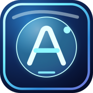

ШЕФ AI PREMIUM
Сейчас нет соединения с интернетом. Для доступа к проектам, рецептурам и ТТК нужна связь с защищённой базой данных.
Данные и авторизация не сохраняются в офлайн-кэше.
Сейчас нет соединения с интернетом. Для доступа к проектам, рецептурам и ТТК нужна связь с защищённой базой данных.
Данные и авторизация не сохраняются в офлайн-кэше.